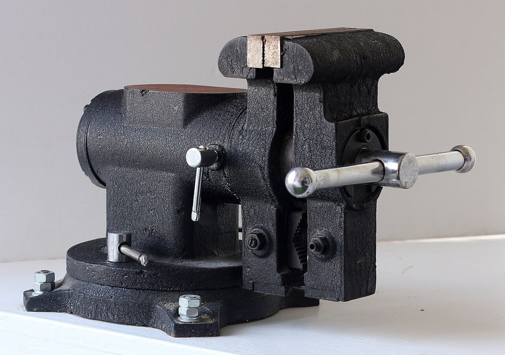
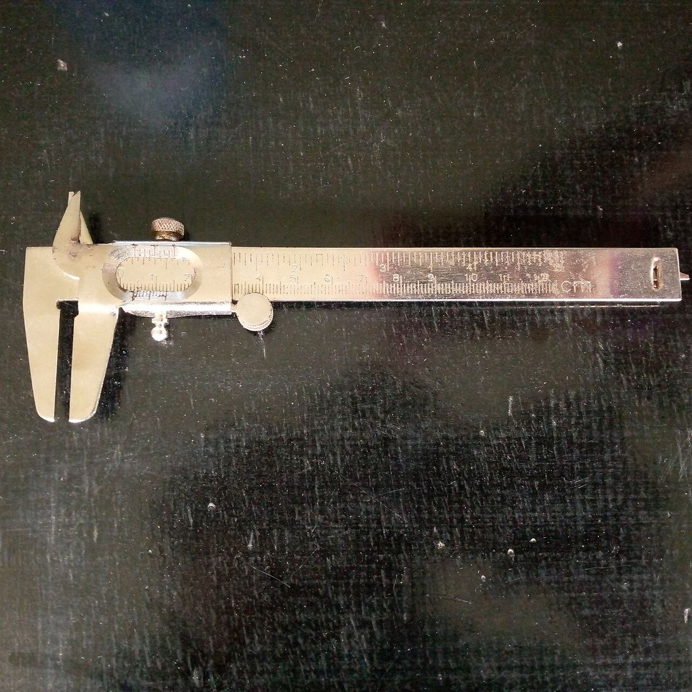
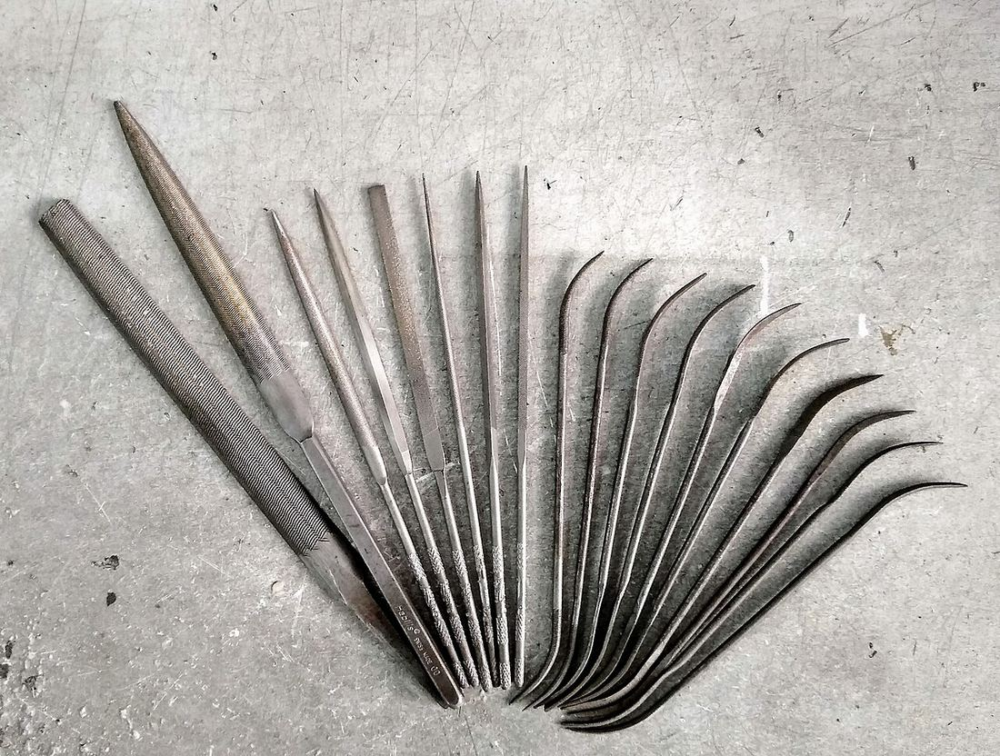

Көркем еңбек (ұлдар) · 3-бөлім · Металл өңдеу Art & Craft (Boys) · Section 3 · Metalworking Художественный труд (мальчики) · Раздел 3 · Обработка металла
Слесарлық құралдар мен тәсілдер
Bench Fitter Tools and Techniques
Слесарные инструменты и приёмы
Металды қолмен өңдеудің негізгі құралдары, өлшеу, белгілеу, кесу мен егеу тәсілдері. The core hand tools for working metal — measuring, marking, sawing, chiselling and filing. Основные ручные инструменты для обработки металла: измерение, разметка, рубка, резание и опиливание.
Слесарлық іс дегеніміз не? What is bench fitting? Что такое слесарное дело?
Слесарлық іс — металды қол құралдарымен өңдеп, бөлшектерді қажетті пішін мен өлшемге келтіретін кәсіп. Шеберхана үстелінде (верстак) жұмыс істейтін слесарь дайындаманы тиекте (тисках) бекітеді, оны штангенциркульмен өлшейді, сызғышпен белгілейді, артық металды ара және зубило арқылы алып тастап, бетін егеумен тегістейді. Дәл осы тәсілдер машина жасаудың, жөндеудің және құрастырудың негізі болып табылады.
Bench fitting is the craft of shaping metal parts by hand to an exact size and form. Working at a workbench, the fitter clamps the workpiece in a vice, measures it with a caliper, marks it out with a steel rule and scriber, removes surplus metal with a hacksaw or cold chisel, and finishes the surface with a file. These very techniques are the foundation of all machine building, repair and assembly.
Слесарное дело — это ремесло обработки металла ручным инструментом для придания детали точного размера и формы. Работая за верстаком, слесарь зажимает заготовку в тисках, измеряет её штангенциркулем, размечает линейкой и чертилкой, снимает лишний металл ножовкой или зубилом, а поверхность доводит напильником. Именно эти приёмы лежат в основе всего машиностроения, ремонта и сборки.
Негізгі слесарлық құралдар The main bench-fitter tools Главные слесарные инструменты
Суретті ұлғайту үшін оны басыңыз. Click an image to enlarge it. Нажмите на изображение, чтобы увеличить.




Құралдар тобы және олардың міндеті Tool groups and their jobs Группы инструментов и их назначение
| Операция | Инструмент | Что делает |
|---|---|---|
| Измерение | Штангенциркуль, линейка, кронциркуль | Определяют размеры детали с нужной точностью |
| Разметка | Чертилка, кернер, угольник, рейсмас | Наносят линии и точки центров под обработку |
| Закрепление | Тиски, струбцина | Удерживают заготовку неподвижно при работе |
| Рубка / резание | Зубило, слесарная ножовка | Снимают лишний металл, отрезают заготовку |
| Опиливание | Напильник, надфиль | Доводят форму и сглаживают поверхность |
| Сверление | Дрель, сверло, кернер | Получают отверстия в детали |
| Операция | Құрал | Не істейді |
|---|---|---|
| Өлшеу | Штангенциркуль, сызғыш, кронциркуль | Бөлшектің өлшемін қажетті дәлдікпен анықтайды |
| Белгілеу | Сызғы (чертилка), кернер, бұрыштық, рейсмас | Өңдеуге арналған сызық пен центр нүктелерін салады |
| Бекіту | Тиек, струбцина | Дайындаманы жұмыс кезінде қозғалтпай ұстайды |
| Кесу / шабу | Зубило, қол арасы | Артық металды алады, дайындаманы кеседі |
| Егеу | Егеу, надфиль | Пішінді дәлдеп, бетті тегістейді |
| Бұрғылау | Бұрғы, сверло, кернер | Бөлшекте тесік жасайды |
| Operation | Tool | What it does |
|---|---|---|
| Measuring | Caliper, steel rule, outside caliper | Find the part's size to the needed accuracy |
| Marking out | Scriber, centre punch, square, surface gauge | Lay down lines and centre points for machining |
| Clamping | Vice, C-clamp | Hold the workpiece still while you work |
| Chipping / cutting | Cold chisel, hacksaw | Remove surplus metal, cut off the blank |
| Filing | File, needle file | Bring the shape to size and smooth the surface |
| Drilling | Drill, drill bit, centre punch | Make holes in the part |
Жалпақ бөлшекті дайындау тәртібі How to make a flat part — step by step Порядок изготовления плоской детали
Дұрыс тәсілдер Good technique Правильные приёмы
- ✓ Егегенде дене салмағын екі қолға біркелкі бөліп, тура қозғалыс жасаңыз. When filing, balance the pressure on both hands and move in a straight stroke. При опиливании распределяйте усилие на обе руки и ведите напильник прямо.
- ✓ Ножовканы кесу кезінде ғана басыңыз, кері қозғалыста қысымды азайтыңыз. Press the hacksaw only on the forward (cutting) stroke; ease off on the return. Нажимайте на ножовку только при движении вперёд; на обратном ходе ослабляйте нажим.
- ✓ Дайындаманы тиекке мүмкіндігінше төмен қысып, дірілді азайтыңыз. Clamp work low in the vice to reduce chatter and vibration. Зажимайте деталь в тисках как можно ниже — меньше дребезга и вибрации.
Қауіпсіздік ережелері Safety rules Правила безопасности
- ! Тұтқасы жоқ егеумен жұмыс істемеңіз — өткір сабы алақанды жарақаттайды. Never use a file without a handle — the bare tang can stab your palm. Не работайте напильником без ручки — острый хвостовик ранит ладонь.
- ! Металл жоңқасын қолмен сыпырмаңыз — қылшақ пайдаланыңыз, көзәйнек киіңіз. Don't brush chips away by hand — use a brush, and wear safety glasses. Не сметайте стружку рукой — пользуйтесь щёткой и надевайте защитные очки.
- ! Жұмыс орнын таза ұстаңыз, құралды орнына қойыңыз, жүзін бетіне қаратпаңыз. Keep the bench tidy, return tools to their place, never point sharp edges at people. Держите рабочее место в порядке, кладите инструмент на место, не направляйте острия на людей.